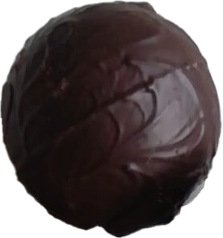
Kirschpralinen
Zutaten: Vollmilchschokolade, Sahne, Luz-Träsch, Kirschlikör, Zartbitterschokolade
Handgemacht
Mit belgischer Callebaut-Schokolade hergestellt. Ohne Konservierungsstoffe – gekühlt haltbar bis Jahresende.

Zutaten: Vollmilchschokolade, Sahne, Luz-Träsch, Kirschlikör, Zartbitterschokolade
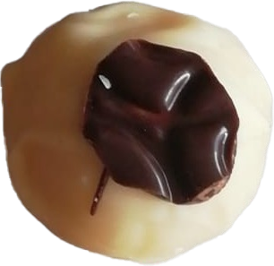
Zutaten: weiße Schokolade, Sahne, Eierlikör, Vanille, Zartbitterschokolade
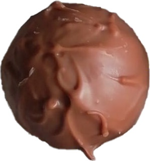
Zutaten: Vollmilchschokolade, Sahne, Baileys
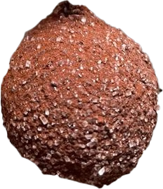
Zutaten: Vollmilchschokolade, Sahne, Cointreau, Zartbitterschokolade, Kakaopulver, Kristallzucker
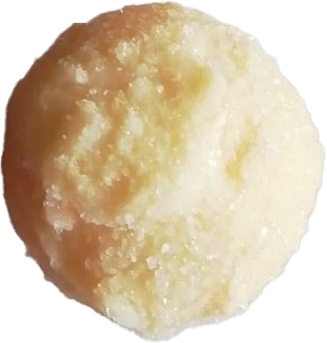
Zutaten: weiße Schokolade, Zucker, Sahne, Eigelbpulver, Limoncello, Butter, Kakaobutter, Fruchtpulver Limette, Kristallzucker
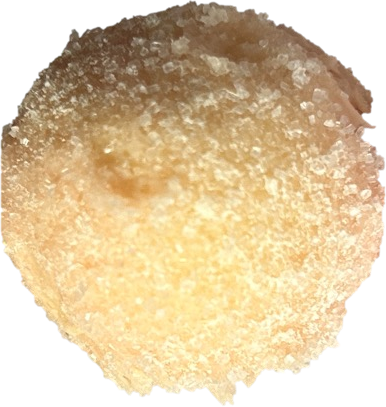
Zutaten: weiße Schokolade, Sahne, Aperol, Orangensaft, Puderzucker, Orangenöl, Kristallzucker, Orangenfruchtpulver
Handgemacht · ohne Alkohol
Mit belgischer Callebaut-Schokolade hergestellt. Ohne Konservierungsstoffe – gekühlt haltbar bis Jahresende.
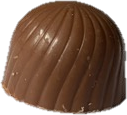
Zutaten: Vollmilchschokolade, Sahne, Zucker, Honig
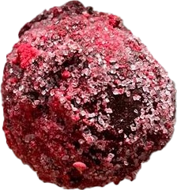
Zutaten: weiße Schokolade, Himbeeren, Zitrone, Sahne, Zucker, Zartbitterschokolade, Fruchtpulver Himbeere, Kristallzucker
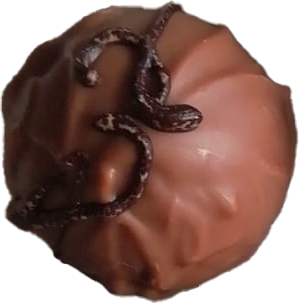
Zutaten: Nougat, Sahne, Vollmilchschokolade, Zartbitterschokolade
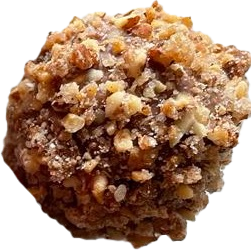
Zutaten: Vollmilchschokolade, Sahne, Zartbitterschokolade, Haselnusskrokant, Nussöl
Handgemacht
Mit belgischer Callebaut-Schokolade hergestellt. Ohne Konservierungsstoffe – gekühlt haltbar bis Jahresende.
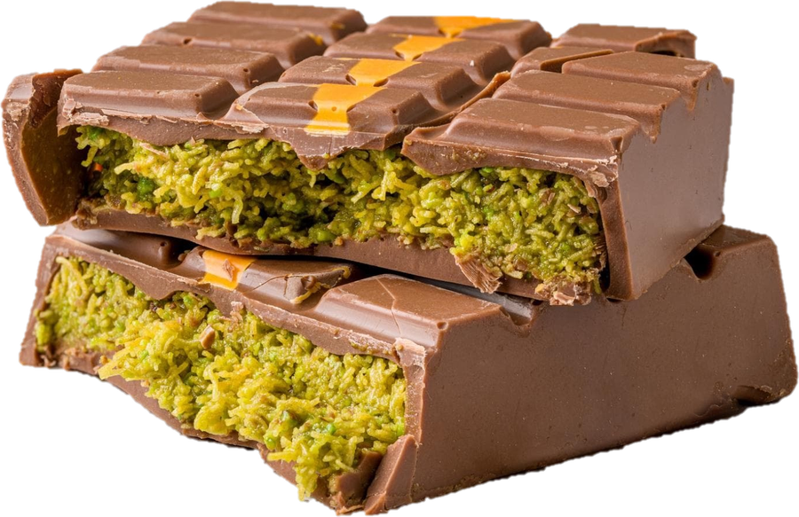
Zutaten: Vollmilchschokolade, Kadayif, Pistaziencreme, Tahini, Butter, Rosenwasser
Für Küche & Tee
Aloysia citrodora
Verwendung: Als Tee oder Erfrischungsgetränk, für Gebäck oder Süßspeisen, als Gewürzkraut für herzhafte Speisen. Das zitronenartige Aroma verleiht den Speisen eine besondere Note.
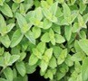
Mentha spicata
Verwendung: Als Tee oder Erfrischungsgetränk, für Marinaden, Salate oder Soßen, für Taboulé und orientalische Gerichte.
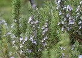
Satureja montana
Verwendung: Passt sehr gut zu Hülsenfrüchten wie Bohnen, Linsen oder Erbsen, auch gut zu Lamm- und Wildgerichten.
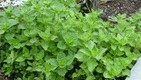
Origanum vulgare
Verwendung: Beliebtes Gewürz der mediterranen Küche: für Pizza, Tomatensoße, Antipasti, Schmorgerichte, Aufläufe und Suppen.
Artemisia dracunculus
Verwendung: Für klassische Soßen, Fisch und Geflügel, Gemüse und Pilze. Estragon schmeckt leicht anisartig und pfeffrig-herb.
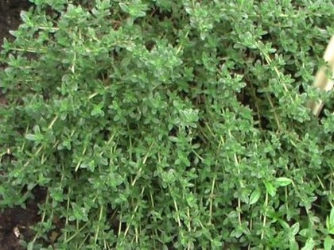
Thymus „Fragrance d’été“
Verwendung: Für mediterrane Speisen, Suppen, Schmorgerichte, Eintöpfe, Lamm, Wild, Geflügel und Kartoffelgratin. Würzig-herb, leicht pfeffrig und harzig.
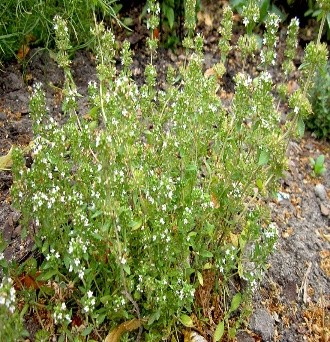
Thymus species
Verwendung: Für mediterrane Speisen, Suppen, Schmorgerichte, Lamm, Fisch und Eintöpfe. Verbindet die herbe Würze des echten Thymians mit frischem Zitronenaroma.
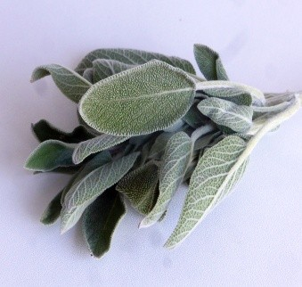
Salvia officinalis
Verwendung: Für Kalb, Hähnchen, Lamm, Fisch oder frittiert zu Pasta. Als Tee traditionell in der Erkältungszeit getrunken.